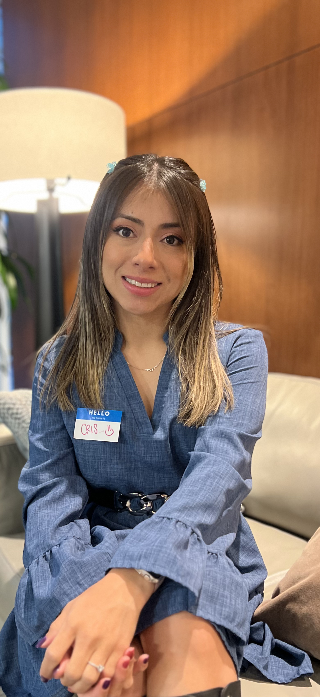

crist.tuberquia@gmail.com | (415) 539-6559

AS Mathematics, AS Liberal Arts: Science and Mathematics, City College of San Francisco
Engineering Assistant - Assisted a mechanical engineer with daily tasks and project organization.
Nanny - Provided childcare and managed daily routines.
Created a Resume using HTML.